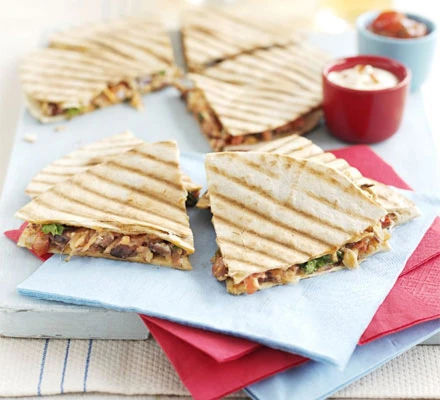

Refried bean quesadillas

Description
This casual meat-free main is a cheap and cheerful way to fill up your friends. Serve these vegetarian quesadillas in slices, so they're easy to eat.
Ingredients
- 1 tbsp sunflower oil
- 1 onion, finely chopped
- 2 garlic cloves, finely chopped
- 1 tsp cumin seeds
- 400g can pinto or kidney beans, rinsed and drained
- 2 tsp smoked paprika
- 8 flour tortillas
- 100g cheddar or gruyère, coarsely grated
- handful coriander leaves
- 200g tub fresh tomato salsa, plus extra to serve
- soured cream, to serve
Steps
- Heat the oil in a large frying pan and cook the onion and garlic for 2 mins. Add the cumin and cook for 1 min more. Tip in the beans, paprika and a splash of water. Using a potato masher, break the beans down as they warm through to make a rough purée. Season generously.
- Spread the refried beans onto 4 of the tortillas and scatter over the cheese and coriander. Spoon over the salsa, then top with the remaining tortillas to make 4 sandwiches. Wipe the frying pan with kitchen paper and return to the heat or heat a griddle pan. Cook each sandwich for 1-2 mins on each side until the tortillas are crisp and golden and the cheese is melting. Serve warm, cut into wedges, with extra salsa and soured cream for dipping.
>